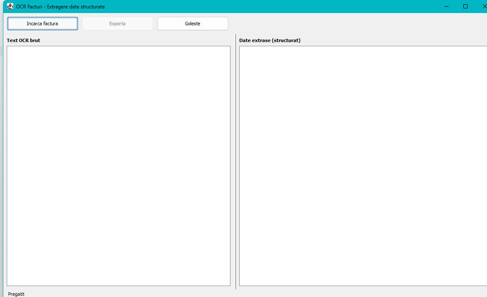
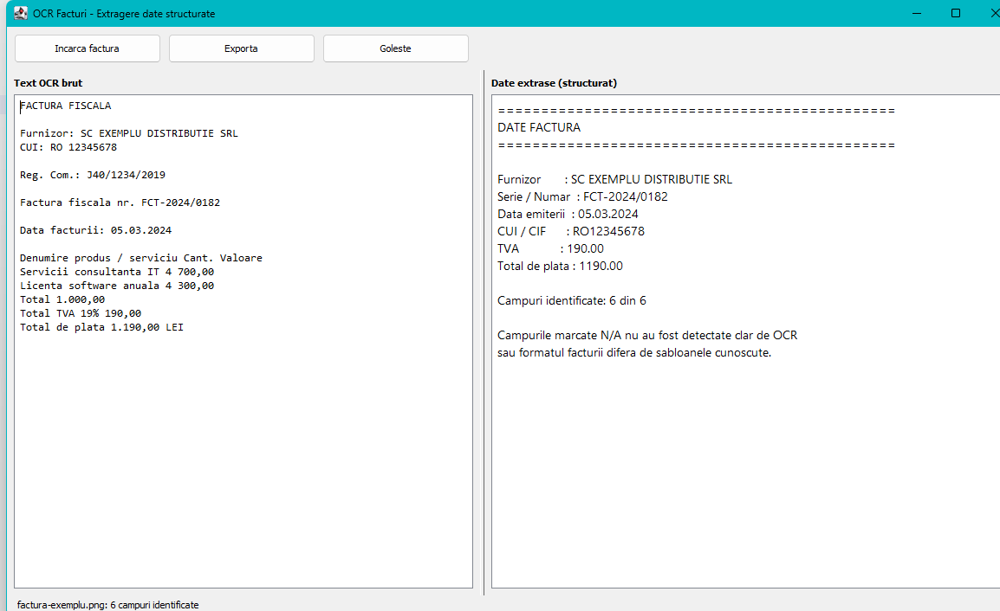

Getting Started
This page walks through one invoice from start to finish. It assumes the application is installed and starts up.
Step 1 — Start the application
Double-click invoice-ocr.jar, or run java -jar invoice-ocr.jar.

Both panels are empty and the status bar at the bottom left reads Pregatit (Ready). The application is waiting for you.
Step 2 — Load an invoice
Click Incarca factura (Load invoice).
A file dialog opens, titled Selecteaza factura (Select invoice). It only lists picture files — PNG, JPG, JPEG, BMP, TIF, TIFF and GIF — because those are the formats the application can read. If your invoice is a PDF, see Preparing Invoices.
Select your file and confirm.
The dialog reopens in the last folder you used, so processing a series of invoices from the same folder takes two clicks each.
Step 3 — Wait for recognition
While the invoice is being read:
- a progress bar runs next to the buttons,
- both buttons are greyed out,
- the mouse pointer becomes an hourglass,
- the status bar shows Se proceseaza … (Processing …) with the file name.
A typical page takes one to three seconds. The window stays responsive — you can move or resize it while it works.
Step 4 — Read the result

The window fills in two panels:
Left — Text OCR brut (Raw OCR text) Exactly what the recognition engine read, line by line, in a fixed-width font. This panel is your evidence. If a field came out wrong, look here first: you will usually see that the engine misread a character, rather than the application mis-assigning a value.
Right — Date extrase (structurat) (Extracted data, structured) The twelve fields, cleaned up and normalised, with the goods table beneath them:
==============================================
DATE FACTURA
==============================================
Furnizor : SC EXEMPLU DISTRIBUTIE SRL
Cumparator : N/A
Serie / Numar : FCT-2024/0182
Data emiterii : 05.03.2024
Data scadentei : N/A
CUI / CIF : RO12345674
Reg. Comertului : N/A
Cont bancar (IBAN) : N/A
Total fara TVA : 1000.00
TVA : 190.00
Total de plata : 1190.00
Moneda : RON (?)
----------------------------------------------
Articole
----------------------------------------------
Denumire Cant Pret unitar Valoare
Servicii consultanta IT 1 700.00 700.00
Licenta software anuala 1 300.00 300.00
Campuri identificate: 8 din 12The status bar confirms the same thing: factura-exemplu.png: 8 campuri identificate, 1 de verificat (8 fields identified, 1 to check).
Notice the (?) beside the currency. It marks a value the application worked out rather than read from its own label — see How It Reads. Everything without a mark was read directly, or checked arithmetically.
What each field means, and which invoice labels the application looks for, is explained in Extracted Fields.
Step 5 — Use the result
Export it. Click Exporta (Export) and choose a format — PDF, TXT, Markdown, HTML, JSON, XML or CSV. The file name is suggested from the invoice you loaded. Exporting explains which format suits which job.
Or copy it. The panels are read-only, but the text is selectable:
| Action | Keys |
|---|---|
| Select everything in a panel | Click in it, then Ctrl+A |
| Copy the selection | Ctrl+C |
Paste into your accounting software, a spreadsheet or an e-mail. Drag the divider between the panels to give one side more room, or maximise the window for long invoices.
Step 6 — Next invoice
Just click Incarca factura again; the new result replaces the old one. Use Goleste (Clear) if you want to empty both panels first — useful when you step away and do not want to mistake an old result for a new one.
When fields show N/A
N/A means the application did not find that field, and it refuses to guess. The footer tells you how many of the twelve were found, for example Campuri identificate: 8 din 12. A blank field is not always a failure: most invoices genuinely do not print a bank account or a due date.
The three usual causes, in order of likelihood:
- The scan is hard to read — the most common by far. → Preparing Invoices
- The wrong recognition language is configured, so Romanian words come out garbled. → Settings
- The invoice uses an unusual label the application does not know. → Extracted Fields
Next: The Main Window · Extracted Fields